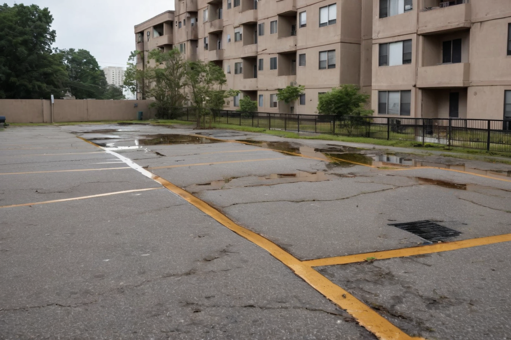

비 온 뒤 물이 고인다
포장 높이와 배수구·관로를 확인합니다.
부대토목부터 포장·배수·조경·유지보수까지,
외부공간의 여러 공종을 함께 살핍니다.
서로 맞물리는 공종을 한 계약으로 살핍니다.
사진은 AI 예시이며 실제 오주건설 시공 실적이 아닙니다.
포장 높이와 배수구·관로를 확인합니다.

단차와 포장 하부·지반을 살펴봅니다.

배수구 입구와 연결관 상태를 확인합니다.

누수 위치와 주변 방수·배수 상태를 살펴봅니다.
겉모습만으로 포장 하부의 상태는 알 수 없습니다.

 문제 상황 예시개선 모습 예시AI 이미지 · 실제 시공 사진 아님
문제 상황 예시개선 모습 예시AI 이미지 · 실제 시공 사진 아님좌우로 움직여 비교할 수 있습니다. 키보드 방향키도 사용할 수 있습니다.
보이는 곳뿐 아니라 물이 빠지는 조건까지 살펴봅니다.

AI 예시 · 실제 시공 아님포장 높이·배수구·하부 상태를 확인한 뒤, 원인에 맞는 보수 범위를 검토합니다.
실제 원인은 현장 조사가 필요합니다.
포장면의 낮은 곳이 배수구 입구보다 낮은 경우를 예로 들었습니다.
원인 확인 · 포장 높이 측정, 배수구·연결관 점검, 필요 시 포장 하부 확인
보수 검토 · 확인된 원인에 따라 기울기 조정, 배수구·관로 정비 또는 하부 보수 등을 검토합니다.
단면은 위 사진과 별개의 일반적인 설명 예시입니다. 실제 구조·원인·공법은 현장 조사와 기술 검토 후 결정합니다.
회사 정보와 시공 범위를 확인하세요.